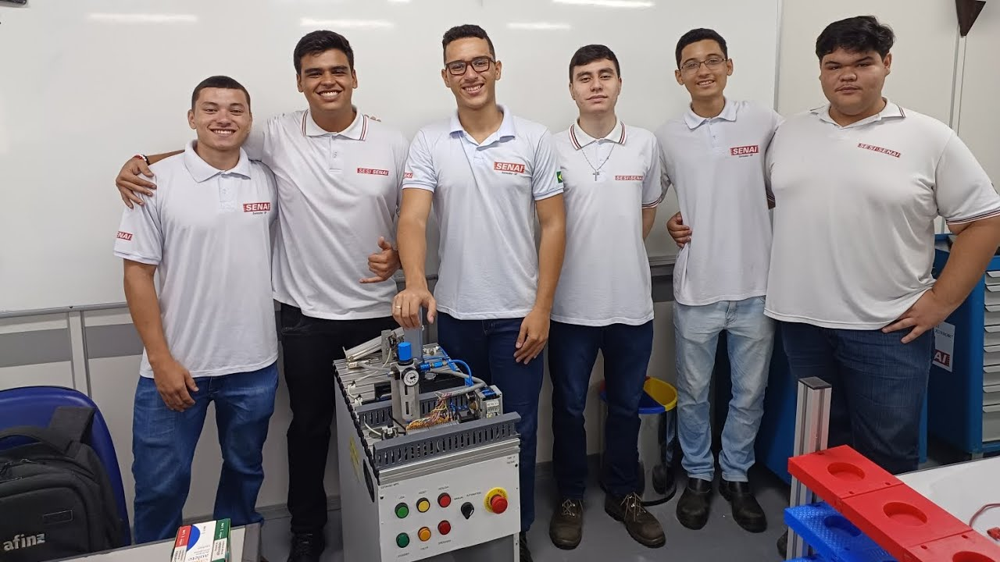
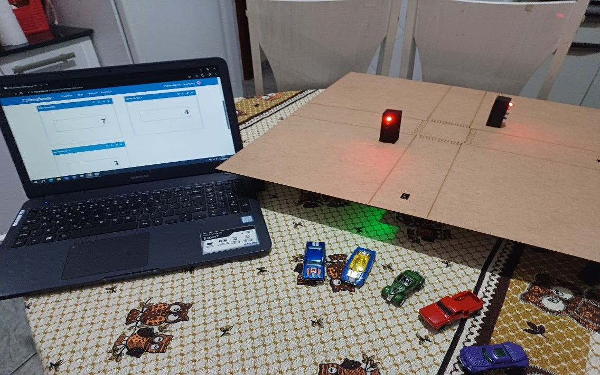

Projetos Pessoais
João Vítor Martinelle

Em 2023, no meu último ano do ensino médio, desenvolvi um projeto intitulado
"Os Impactos das
Produções Audiovisuais na Sociedade"
com o objetivo de destacar a importância e o impacto da música e dos vídeos na vida das pessoas.
Através de entrevistas, foi possível explorar de perto as diversas perspectivas sobre o tema proposto.

A série de entrevistas em estilo documentário possui 3 episódios.

O episódio 0 (piloto) é com o professor de filosofia e sociologia José Francisco.
Assista esse episódio
aqui

O episódio 1 conta com a participação da professora de geografia Elenira.
Assista esse episódio aqui

O episódio 2 tem a presença do professor Tiago de língua portuguesa (também orientador do projeto).
Assista esse episódio
aqui

Em dezembro de 2023, finalizei meu curso técnico em mecatrônica com o desenvolvimento de um projeto de
automação industrial.
O projeto envolvia uma mesa de distribuição de peças, que utilizava sensores, válvulas e atuadores
pneumáticos, circuitos elétricos
e a programação de CLP (Controlador Lógico Programável) para executar a tarefa de forma automatizada.
Assista aqui o vídeo de apresentação do projeto: Estação de distribuição MPS - FESTO

No primeiro semestre de 2024, apresentei meu projeto IoT no Centro Universitário Facens.
O projeto consiste em um semáforo inteligente capaz de se adaptar ao fluxo de automóveis, melhorando o trânsito
da cidade de Sorocaba.
Para demonstrar o funcionamento, meu grupo construiu uma maquete (em uma chapa de MDF que foi cortada e
desenhada pela máquina de corte a laser do FAB LAB FACENS)
do cruzamento com os semáforos, adicionando um LED azul nos semáforos convencionais para indicar quando um carro
era contabilizado, fornecendo uma maior segurança.
O semáforo libera primeiro o lado do cruzamento com mais carros, a fim de evitar congestionamentos.
Confira aqui o vídeo que demonstra as etapas do projeto e seu funcionamento: Integração IoT - Semáforo
Inteligente

Home
Hobbies
Contato